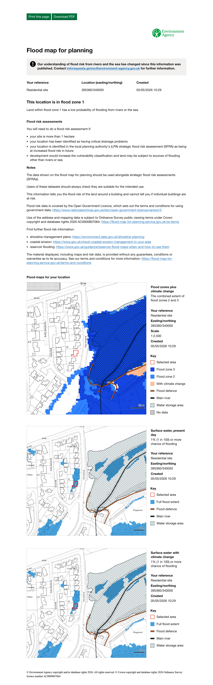
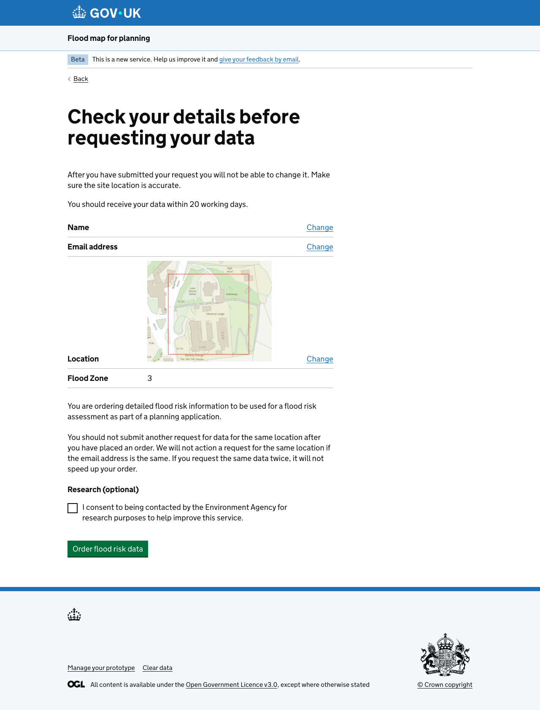
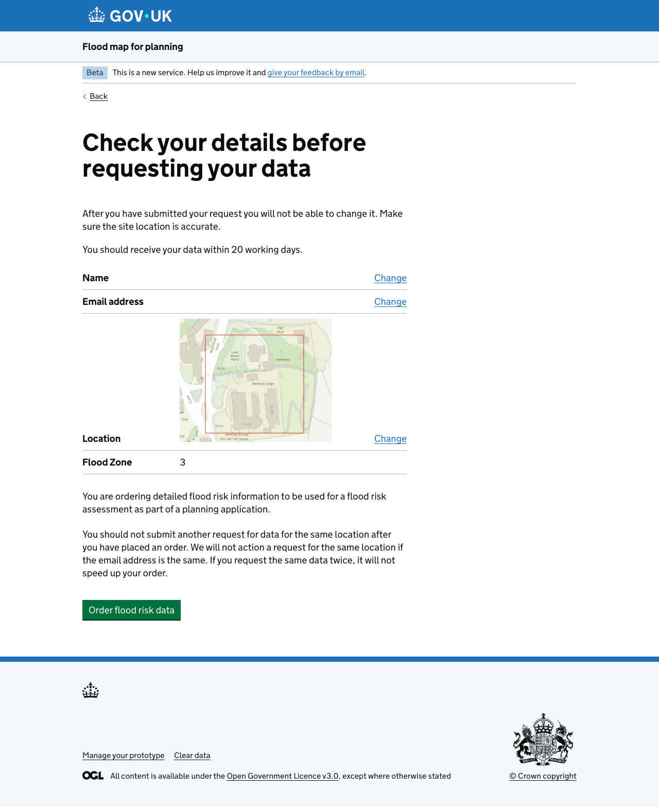
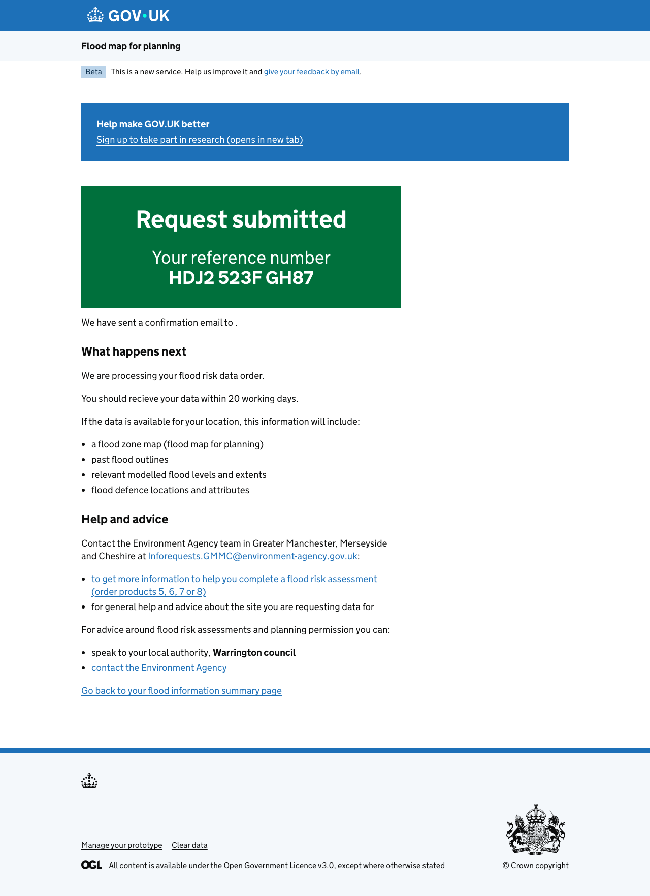
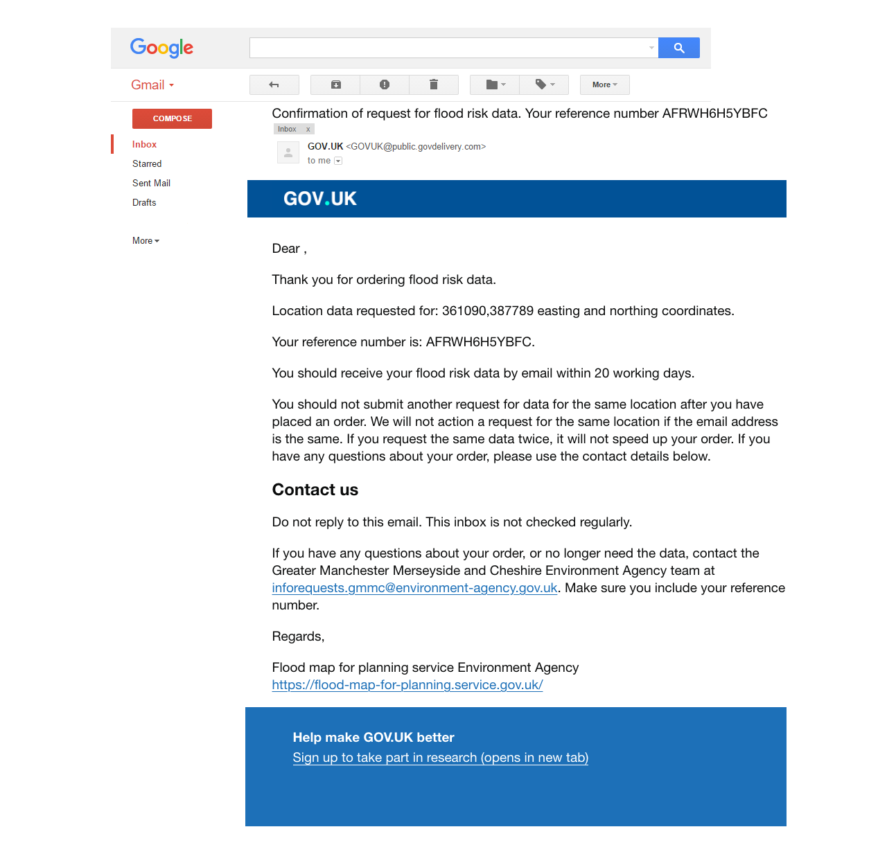

Published
Design snapshot
This is a record of the Product 1 report design and a research recruitment feature at this point in time.
This design shows the Product 1 report as an HTML page, so users can preview it before they download it.
Users often find the report area does not scale the way they expected. Seeing the preview first lets them go back and adjust their boundary before downloading, which avoids unnecessary downloads.
From the preview page, users can download the report as a PDF or print it.
Showing the report as an HTML page first gives users a far more accessible copy of the report before they get the PDF.
The map in the report now shows more data, including surface water and climate change scenarios. This matches the data available in the online service.

We currently struggle to recruit users to take part in research. This design adds ways for users to sign up to research as part of ordering flood risk data, at points where they have just used the service.
These pages were first designed in v3.7.0.2, but were not part of that research round. They have not yet been tested with users.
An optional "Research" checkbox lets users consent to being contacted by the Environment Agency for research to help improve the service.

An alternative version of the page without the research checkbox, for comparison.

A "Help make GOV.UK better" banner at the top of the confirmation page links to a research sign-up form.

The same research sign-up banner appears at the end of the confirmation email.

{% endblock %}